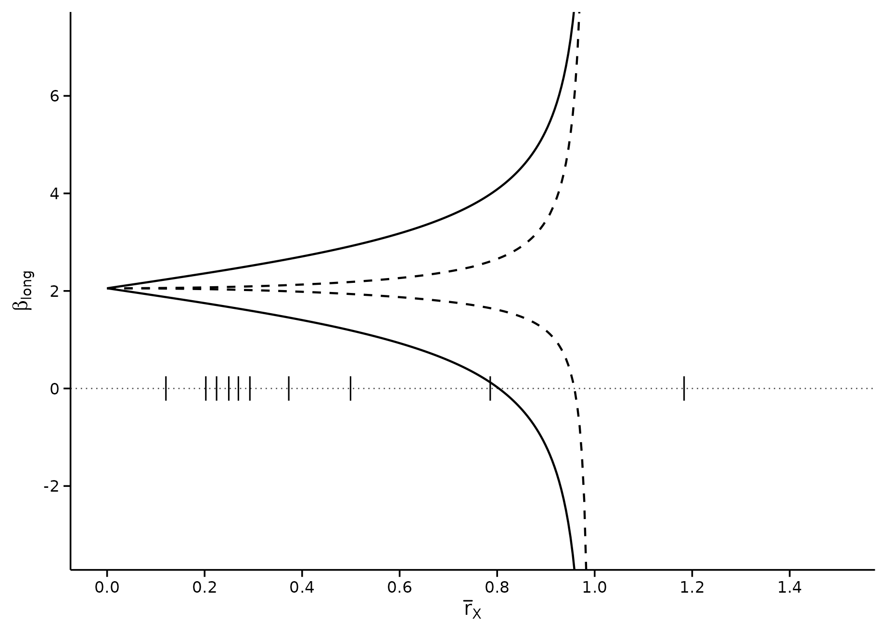
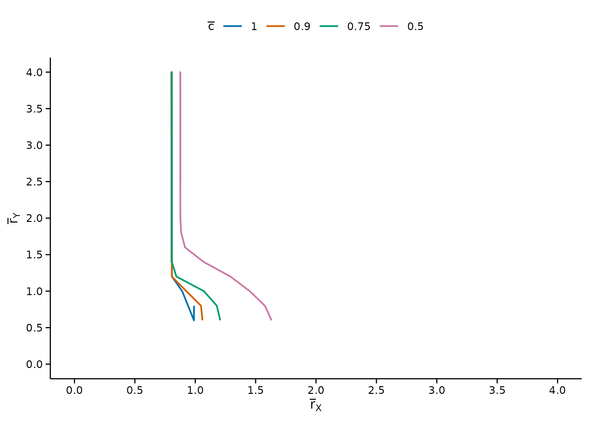

Side by side with the published figures
Source:vignettes/articles/figure-comparison.Rmd
figure-comparison.RmdA replication that only reports numbers asks you to trust that the figures line up too. This page puts them next to each other.
The panels on the left are reproduced from Diegert, Masten
and Poirier (2026), Assessing Omitted Variable
Bias when the Controls are Endogenous (arXiv:2206.02303v6,
Figure 1), for the purpose of comparison. Copyright rests with the
authors. The panels on the right are produced by this package from the
bundled bfg2020 data, by the code shown beneath each
one.
This page is part of the website only. It is excluded from the package tarball, so the reproduced figures are not redistributed on CRAN.
Figure 1, left panel
Bounds on against at . Solid lines leave unrestricted; dashed lines impose . The marks on the zero line are the Table 4 calibration values.
regsensitivity
rx <- seq(0, 1.4, length.out = 300)
solid <- regsen_bounds(form, bfg2020, compare = w1, cbar = 1, rxbar = rx)
dashed <- regsen_bounds(form, bfg2020, compare = w1, cbar = 1, rxbar = rx,
rybar_expr = function(r) r)
a <- as.data.frame(solid); a$spec <- "rybar = Inf"
b <- as.data.frame(dashed); b$spec <- "rybar = rxbar"
df <- rbind(a[, c("rxbar", "bmin", "bmax", "spec")],
b[, c("rxbar", "bmin", "bmax", "spec")])
df$bmin[!is.finite(df$bmin)] <- NA
df$bmax[!is.finite(df$bmax)] <- NA
ticks <- calibrate_rho(form, bfg2020, compare = w1)$rho / 100
ggplot(df, aes(x = rxbar, linetype = spec)) +
geom_hline(yintercept = 0, colour = "grey30", linewidth = 0.3,
linetype = "dotted") +
geom_line(aes(y = bmin), linewidth = 0.5, na.rm = TRUE) +
geom_line(aes(y = bmax), linewidth = 0.5, na.rm = TRUE) +
annotate("segment", x = ticks, xend = ticks, y = -0.25, yend = 0.25,
linewidth = 0.35, colour = "black") +
scale_linetype_manual(values = c("rybar = Inf" = "solid",
"rybar = rxbar" = "dashed")) +
scale_x_continuous(breaks = seq(0, 1.4, 0.2)) +
scale_y_continuous(breaks = seq(-2, 6, 2)) +
coord_cartesian(xlim = c(0, 1.5), ylim = c(-3.2, 7.2)) +
labs(x = expression(bar(r)[X]), y = expression(beta[long]),
linetype = NULL) +
theme_regsen(base_size = 10) +
theme(legend.position = "none")
The two curves cross zero at the paper’s two breakdown points:
c(`rybar = Inf` = abs(solid$breakdown), # paper: 0.804
`rybar = rxbar` = abs(dashed$breakdown)) # paper: 0.96
#> rybar = Inf rybar = rxbar
#> 0.8035643 0.9583522Both bounds go infinite at under the dashed specification, and just below 1 under the solid one, which is where both curves leave the panel in the published figure too.
Figure 1, right panel
The breakdown frontier in space, one curve per .
regsensitivity
frontier <- function(cbar, rys) {
rx <- vapply(rys, function(ry) {
r <- try(regsen_breakdown(form, bfg2020, compare = w1,
cbar = cbar, rybar = ry), silent = TRUE)
if (inherits(r, "try-error")) NA_real_ else abs(r$results$breakdown[1])
}, numeric(1))
data.frame(rxbar = rx, rybar = rys, cbar = factor(cbar))
}
rys <- c(seq(0.6, 2, by = 0.2), 2.5, 3, 4)
fr <- do.call(rbind, lapply(c(1, 0.9, 0.75, 0.5), frontier, rys = rys))
ggplot(fr, aes(x = rxbar, y = rybar, group = cbar, colour = cbar)) +
geom_line(linewidth = 0.6, na.rm = TRUE) +
scale_colour_regsen() +
scale_x_continuous(breaks = seq(0, 4, 0.5)) +
scale_y_continuous(breaks = seq(0, 4, 0.5)) +
coord_cartesian(xlim = c(0, 4), ylim = c(0, 4)) +
labs(x = expression(bar(r)[X]), y = expression(bar(r)[Y]),
colour = expression(bar(c))) +
theme_regsen(base_size = 10)
Where this one stops short, and why. The published panel runs to , each curve having flattened onto a horizontal arm. This reproduction covers the vertical arm only. That arm carries the quantity the paper reports – each curve approaches as grows, which is the breakdown point of Table 1, Panel C. The horizontal arm lives in a region the package declines to compute:
regsen_bounds(form, bfg2020, compare = w1, cbar = 1, rxbar = 2, rybar = 0.6)
#> Error:
#> ! Bounds calculation not implemented in the region where rxbar > rmax(c) > rybar (see DMP 2026)Rather than return a number it cannot stand behind, it raises that error. So the missing arm is a stated limitation of the implementation, not a disagreement with the paper.